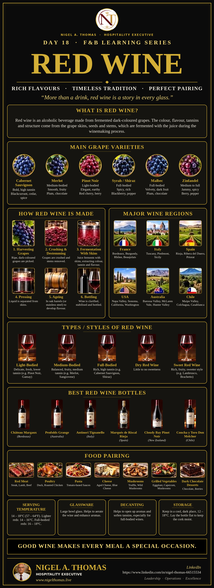

Rich flavours, timeless tradition, perfect pairing: grapes, regions, styles and service.
Red wine is more than a drink. It is agriculture, chemistry, geography and history poured into a glass, and it is one of the most important beverages in any restaurant, hotel or bar. A guest who orders red wine is usually looking for warmth, depth and a sense of occasion, and the person who serves it is expected to know enough to guide that choice with confidence. Yet red wine is also one of the easiest subjects to overcomplicate, with long lists of grapes, villages and vintages that can overwhelm even experienced staff.
This guide goes with the Day 18 Red Wine poster below. It follows the same logical path as the poster: what red wine is, the main grape varieties, how it is made, where it comes from, the styles you will meet, some benchmark bottles, which foods it suits, and how to serve and store it properly. After more than thirty years in hospitality, on ships, in hotels and in restaurants across India, the Middle East and the USA, I have learned that guests do not want a lecture. They want a clear, confident recommendation. The knowledge below is what makes that possible.
Red wine is an alcoholic beverage made from fermented dark-coloured grapes. The key point, and the one that surprises many guests, is that the juice of almost all grapes is clear. The colour, flavour, tannins and structure of red wine come from the grape skins, seeds and stems, which are fermented together with the juice during the winemaking process. This contact is what turns a pale juice into a deep purple, ruby or garnet wine, and it is also what gives red wine its grip, complexity and ability to age.
Three elements shape almost everything you taste in a glass of red:
If you want the vocabulary to describe these qualities, our wine terminology guide is a useful companion.
Thousands of grape varieties exist, but a small group accounts for most of the red wine you will serve. The poster highlights six. Learn their character, and you can describe most wine lists with confidence.
Bold and high in tannin, with flavours of blackcurrant, cedar and spice. Cabernet Sauvignon has thick skins that give deep colour and firm structure, and it is the backbone of famous wines in Bordeaux, Napa Valley, Chile and Australia. It is a classic partner for steak and aged cheese, and it ages beautifully.
Medium-bodied, smooth and fruity, with notes of plum and chocolate. Merlot is softer and rounder than Cabernet, with gentler tannins, which makes it approachable and popular with guests who prefer an easy-drinking red. It is widely planted in Bordeaux, where it is often blended with Cabernet.
Light-bodied, elegant and earthy, with red cherry and berry flavours. Pinot Noir has thin skins, so it is paler and lower in tannin than most reds. It is a delicate grape that expresses the place it grows, and it is the great red of Burgundy. It is also one of the most food-friendly wines, working with duck, salmon, mushrooms and poultry.
Full-bodied, spicy and rich, with blackberry and pepper notes. The same grape is called Syrah in France and Shiraz in Australia, and the name often signals the style: Syrah tends to be more peppery and restrained, while Shiraz is usually riper, fuller and fruitier. It suits grilled meats and spiced dishes.
Full-bodied, velvety, with dark fruit, plum and chocolate. Malbec originated in France but found its greatest fame in Argentina, where it produces plush, generous wines that pair brilliantly with barbecued beef.
Medium to full-bodied, jammy and spicy, with berry and pepper notes. Zinfandel is closely associated with California, where it makes bold, fruity reds that are often higher in alcohol. It works well with barbecue, burgers and robust tomato-based dishes.
The process of making red wine can be summarised in six steps. Each decision along the way affects the wine in the glass.
This is why two wines made from the same grape can taste so different. The vineyard, the vintage, the length of skin contact, the type of oak and the length of ageing all leave their mark.
Geography matters in wine, because climate and soil shape how grapes ripen. The poster covers six major producers, and a few notes on each will help you place a bottle on the list. For a deeper look at the most celebrated of them, read our guide to the wine regions of France.
A useful rule of thumb is that cooler regions tend to produce lighter, more elegant reds with higher acidity, while warmer regions produce riper, fuller and more alcoholic wines.
Rather than memorising grapes, it is often easier to describe red wine by style. The poster uses five categories that you can use on the floor.
When a guest says “I like something smooth,” they usually mean lower tannin, so look to Merlot, Pinot Noir or Gamay. When they ask for “something bold,” they typically want a full-bodied, tannic red. Learning to translate these everyday words into styles is the heart of good wine service.
The poster features six bottles that are often cited as reference points for their regions. They are not the only great wines, and they are certainly not all affordable, but they are useful names to know.
In practice, the most useful skill is not memorising famous labels but being able to recommend a good bottle at the price the guest wants to pay. Knowing the style and the region gets you there.
Red wine and food is a topic in itself, and our full guide to food and wine pairing goes deeper. The poster summarises seven reliable matches:
The guiding principles are simple. Match the weight of the wine to the weight of the dish, remember that tannin loves fat and protein, and be careful with very spicy or very salty food, which can make tannic wines taste harsh. For Indian and other spiced dishes, softer, fruitier, lower-tannin reds are generally safer.
A good wine can be spoiled by poor service, and a modest wine can shine when it is served well. Four details make the biggest difference.
The poster recommends serving red wine at 14 to 18°C (57 to 64°F). Lighter reds such as Pinot Noir and Gamay show best at 14 to 16°C, and full-bodied reds such as Cabernet Sauvignon and Shiraz at 16 to 18°C. The old rule of serving red wine at “room temperature” comes from cool European cellars. In a warm climate, a room can be 28°C or more, which makes red wine taste heavy, alcoholic and flat. Chill a warm bottle for 15 to 20 minutes before serving, and keep it in a cooler or ice bucket in hot weather.
A large-bowl glass gives red wine room to breathe. It helps to aerate the wine and enhance the aromas, and the generous surface area lets scent gather above the wine. Fill the glass to roughly one third so that guests can swirl comfortably.
Decanting means pouring the wine from its bottle into a separate vessel. It helps to open up aromas and soften tannins, especially for full-bodied wines. Young, powerful reds often benefit from 30 to 60 minutes in a decanter. Older wines are decanted differently, slowly and gently, mainly to separate the wine from natural sediment. Light, delicate wines such as old Pinot Noir may need very little air, so taste before you decide.
Keep wine in a cool, dark place at a steady 12 to 18°C, and lay the bottle flat to keep the cork moist, which protects it from drying out and letting in air. Avoid heat, strong light and vibration, and avoid wide temperature swings. Once opened, a red wine will usually keep for three to five days if re-stoppered and stored cool, although it will slowly lose freshness.
A confident, consistent service sequence reassures guests and protects the wine. Adapt it to your venue’s standards:
Tasting is a skill that improves quickly with practice. A simple five-step approach works for guests and staff alike:
Use plain, descriptive language when explaining a wine to guests. “Rich and spicy with dark berry fruit” helps a guest far more than a string of technical terms.
Wine service carries responsibilities. Follow your venue’s responsible service of alcohol policy and local laws, pay attention to the pace of drinking, offer water, and never serve guests who are intoxicated. Wine labels in many markets must state that the wine contains sulphites, and some guests have allergies or sensitivities, so be ready to answer questions honestly or to check with a manager. Offer wines by the glass, and tasting measures where possible, so that guests can explore without over-committing.
A good list does not need to be long. A compact selection that covers each style gives guests real choice and keeps staff knowledgeable. Include at least one light-bodied, one medium-bodied and one full-bodied red, a spread of regions such as France, Italy, Spain, the Americas and Australia, and a few options by the glass at accessible prices. Describe each wine in a short, plain line, for example “smooth and fruity with plum and soft tannin”, so that guests can choose without feeling intimidated. Review the list each season, watch which wines sell and which stay on the shelf, and train the team to recommend from it with confidence.
| Grape | Body | Typical flavours | Pairs with |
|---|---|---|---|
| Cabernet Sauvignon | Full | Blackcurrant, cedar, spice | Steak, aged cheese |
| Merlot | Medium | Plum, chocolate | Roast chicken, pasta |
| Pinot Noir | Light | Red cherry, earthy berry | Duck, salmon, mushrooms |
| Syrah / Shiraz | Full | Blackberry, pepper | Grilled meats, spiced dishes |
| Malbec | Full | Plum, dark fruit, chocolate | Barbecued beef |
| Zinfandel | Medium to full | Jammy berry, pepper | Barbecue, burgers |
No. Room temperature is a vague idea that dates from cool European cellars. Aim for 14 to 18°C, which means lightly chilling red wine in warm climates.
Tannins are natural compounds from grape skins, seeds, stems and oak that create a drying, grippy feel in the mouth. They help red wine to age and they pair well with fatty, protein-rich food.
Many young, full-bodied reds improve with air, and decanting is the quickest way to give them it. Delicate or old wines may need very little, so taste first.
Usually three to five days if it is re-stoppered and kept in a cool place. Fresh, light wines fade sooner than robust, tannic ones.
No. Price reflects many things, including rarity, brand and cost of production. A well-chosen bottle that suits the dish and the guest is better than an expensive one that does not.
They are the same grape. The name often signals a style: Syrah suggests a more restrained, peppery wine, and Shiraz a riper, fuller and fruitier one.
Red wine rewards curiosity. Learn the six grapes, understand the six steps of winemaking, know the regions and the styles, match the wine to the dish, and serve it at the right temperature in the right glass. Do that, and you will be able to guide almost any guest to a bottle they will enjoy, whatever the occasion.
As the poster says, good wine makes every meal a special occasion. Use the poster as a quick reference in the training room or at the bar, and use this guide for the reasoning behind it. If you would like to keep learning, the related wine guides below are a good next step. Then taste widely, keep notes and always listen to the guest.

Explore the great French wine regions, their grapes and their signature styles.
Read Article →Essential wine terms every hospitality professional should know.
Read Article →The history and logic behind the standard wine bottle size.
Read Article →Match steak, seafood, cheese and dessert with the right wine.
Read Article →Nigel A. Thomas is a hospitality executive and corporate trainer with 30+ years of international experience across luxury hotels, resorts, cruise lines and F&B operations. Read more about Nigel or connect on LinkedIn.